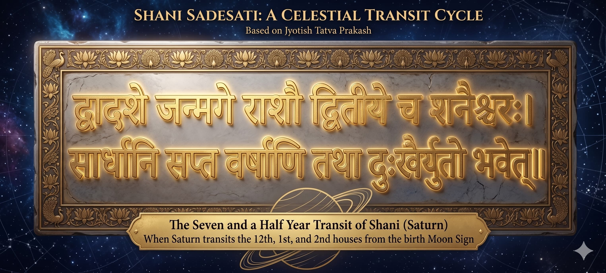

Everyone knows the term. Almost nobody understands what it actually means. And the fear that surrounds it — the Google searches at midnight, the anxious calls to astrologers — is almost always worse than the reality.
 ✦ Saturn — the ringed planet that governs karma, time, discipline, and the slow inevitable restructuring of all things ✦
✦ Saturn — the ringed planet that governs karma, time, discipline, and the slow inevitable restructuring of all things ✦
I have been reading charts for 16 years. In that time I have seen Sade Sati destroy careers, end marriages, and bring people to their knees. I have also seen it build empires, create clarity out of chaos, and strip away everything false so that something real could finally grow.
The outcome is never random. And it is almost never what people fear it will be.
What Sade Sati Actually Is

✦ Saturn — the ringed planet that governs karma, time, discipline, and the slow inevitable restructuring of all things ✦Saadhe Saat — seven and a half. That is the literal meaning. It refers to the period when Saturn transits through three consecutive signs: the sign before your Moon sign, your Moon sign itself, and the sign after. Saturn takes approximately 2.5 years in each sign. Three signs, 2.5 years each — seven and a half years total.
 ✦ Saturn — the ringed planet that governs karma, time, discipline, and the slow inevitable restructuring of all things ✦
✦ Saturn — the ringed planet that governs karma, time, discipline, and the slow inevitable restructuring of all things ✦
The three phases of Sade Sati are not equal. Each has a distinct character, a distinct pressure, and a distinct lesson.
Vyaya Shani
Janma Shani
Pada Shani
Which Moon Signs Are Under Shani’s Strongest Transit in 2026?
In Lahiri sidereal Vedic astrology, Saturn remains in Meena (Pisces) throughout 2026. The result must be judged from your Vedic Moon sign (Chandra Rashi), not only from your Western Sun sign.
Seven Moon signs receive special attention in this article: three are passing through Sade Sati, two are under the commonly recognised Shani Dhaiya, and two more experience the broader Kantaka Shani pressure through Saturn’s seventh or tenth-house transit.
A faster blinking light marks Sade Sati, a slow red pulse marks Dhaiya, and a steady amber light marks the additional Kantaka Shani transits discussed below.
Sade Sati Active in 2026
Saturn is transiting the sign before, over, or after the natal Moon.
Shani Dhaiya Active in 2026
Saturn is transiting the fourth or eighth house from the natal Moon.
Additional Kantaka Shani Transits
Some traditions separately emphasise Saturn’s seventh and tenth-house transits from the Moon.
Important: these are broad transit indications from the Moon sign. The final result depends on Saturn’s natal strength, house ownership, aspects, yogas and the running Dasha–Antardasha.
 ✦ Shani in Meena during 2026 — read the transit from your Vedic Moon sign ✦
✦ Shani in Meena during 2026 — read the transit from your Vedic Moon sign ✦
Sade Sati Moon Signs in 2026
| Moon Sign | 2026 Phase | Main Area of Attention | Status |
|---|---|---|---|
| Kumbha (Aquarius) | Setting · Pada Shani | The heaviest mental pressure may begin to ease, while responsibilities involving family, finances, speech and long-term stability still require patience and discipline. | ACTIVE IN 2026 |
| Meena (Pisces) | Peak · Janma Shani | Saturn crosses the natal Moon sign, placing greater emphasis on emotional resilience, health routines, identity, relationships and mature decision-making. | PEAK IN 2026 |
| Mesha (Aries) | Rising · Vyaya Shani | Expenses, sleep, withdrawal, foreign links and the ending of outdated patterns may become more visible. This is the preparation stage of the larger restructuring. | ACTIVE IN 2026 |
Shani Dhaiya and Kantaka Shani in 2026
Shani Dhaiya is commonly used for Saturn’s transit through the fourth or eighth house from the natal Moon. With Saturn in Pisces during 2026, this places Dhanu (Sagittarius) under the fourth-house transit and Simha (Leo) under the eighth-house transit, also called Ashtama Shani.
The term Kantaka Shani is used differently across traditions. In this article, Kanya (Virgo) and Mithuna (Gemini) are separately shown for Saturn’s seventh and tenth-house transits. These are important pressure points, but they should not be presented as identical to the full 7.5-year Sade Sati cycle.
| Moon Sign | Saturn’s House | Likely Themes to Watch | Status |
|---|---|---|---|
| Dhanu (Sagittarius) | Fourth house · Dhaiya | Home, property, vehicles, inner peace, relocation and responsibilities connected with the mother may require greater care and planning. | DHAIYA · 2026 |
| Simha (Leo) | Eighth house · Ashtama Shani | Sudden changes, shared finances, health discipline, hidden matters, inheritance and psychological transformation may need a patient, methodical approach. | DHAIYA · 2026 |
| Kanya (Virgo) | Seventh house · Kantaka | Marriage, committed partnerships, contracts and public dealings may demand clearer boundaries, empathy and realistic expectations. | KANTAKA · 2026 |
| Mithuna (Gemini) | Tenth house · Kantaka | Career workload, authority, reputation, business systems and accountability may intensify. Sustainable effort matters more than hurried expansion. | KANTAKA · 2026 |
The Truth Most Astrologers Won't Tell You
Sade Sati is not universally difficult. That statement alone goes against most of what you will read online — but it is what 16 years of reading charts consistently shows.
The experience of Sade Sati depends on three things: your natal Saturn placement, your Moon sign lord, and your current Dasha period. Change any one of those and the same transit feels completely different to two people born a month apart.
Moon signs that often do well in Sade Sati: Makar (Capricorn), Kumbha (Aquarius), and Tula (Libra). These signs have a natural alignment with Saturn's energy — Saturn rules Capricorn and Aquarius, and is exalted in Libra. For these Moon signs, Sade Sati often brings discipline, recognition, and the achievement of something worked toward for years. Amitabh Bachchan rose to superstardom during his Sade Sati. The same period that looked like crisis on the surface was, for him, the forging of a legacy.
Moon signs that tend to feel it most: Karka (Cancer) and Simha (Leo). Saturn is an enemy of the Moon and Sun, which rule Cancer and Leo respectively. For these Moon signs, the pressure is real and the lessons are harder to metabolise. But even here — it is not permanent, and the lessons, once integrated, are the most valuable ones.
It destroys what was never real to begin with.
What I have observed consistently across thousands of charts: the people who struggled most in Sade Sati were those who resisted the restructuring. They held onto what Saturn was clearly ending — relationships, careers, identities — and suffered the length of the resistance. The people who worked with it came out with careers, relationships, and clarity they could not have reached any other way.
 ✦ शनि साढ़ेसात्ति ✦
✦ शनि साढ़ेसात्ति ✦
The Hanuman Connection — From the Ramayana
There is a reason Hanuman Chalisa is the single most recommended remedy for Sade Sati — and it is not superstition. It is rooted in the Ramayana itself.
When Hanuman was returning from Lanka after meeting Mata Sita, he encountered Shanidev — who had been imprisoned by Ravana in his palace. Hanuman freed Shanidev from captivity. In gratitude, Shani gave Hanuman a boon: that he and his devotees would never be adversely affected by Shani's malefic influence.
बल बुद्धि विद्या देहु मोहिं, हरहु कलेश विकार॥ Knowing myself to be without wisdom, I remember you, O son of Vayu — grant me strength, wisdom, and learning; remove my suffering and affliction. — Hanuman Chalisa, Goswami Tulsidas
This is why Hanuman temples are the traditional place of Saturn remedies. Not random faith — but a specific relationship established in the cosmic story. Shanidev's boon to Hanuman is the foundation of every Saturn remedy that involves Hanuman worship.
 ✦ Hanuman freeing Shanidev from Ravana's captivity — the mythological basis of every Saturn remedy involving Hanuman worship ✦
✦ Hanuman freeing Shanidev from Ravana's captivity — the mythological basis of every Saturn remedy involving Hanuman worship ✦
What Actually Helps — Specific Remedies
Saturn responds to one thing above all others: genuine discipline and genuine service. Every traditional remedy for Shani is, at its core, a practice of one or both. The remedies below are not superstition — they are each grounded in Saturn's nature as the planet of karma, time, labour, and the essential.
- Shani Mantra: Om Sham Shanicharaya Namah — 108 times on Saturdays. Not as performance. As practice. Done consistently for three months, the internal shift becomes unmistakable. If you have a mala, use it. For all mantras, check this post: Click here Shani Mantras guide
- Hanuman Chalisa: Read every day during Sade Sati — not only on Saturdays. The Ramayana basis for this remedy is explained above. Saturday mornings before sunrise carry the greatest weight. Even once through, slowly, counts.
- Sesame oil lamp: Light a til oil lamp at a Shani or Hanuman temple on Saturdays before sunset. Black sesame seeds (kala til) offered alongside are the traditional accompaniment. The oil and the sesame are both Saturn's own materials.
- Seva — real service: Saturn governs workers, the elderly, iron and coal workers, the physically labouring, those society overlooks. Genuine service to these communities — not token charity, but actual time and direct attention — is what Saturn responds to most directly. This is the remedy that works when nothing else does.
- Donate on Saturdays: Mustard oil, black sesame, black cloth, iron items, dark lentils (urad dal). These are Saturn's materials. Donating them to those in genuine need on Saturdays, before noon, lightens Saturn's karmic weight in a way that is difficult to explain but consistently observable.
- Blue Sapphire or Amethyst: Only after a proper chart reading — never on general advice. Gems amplify planetary energy, which can help or cause harm depending on your specific natal Saturn placement and current dasha. Amethyst is gentler and safer for most people. Blue Sapphire requires specific conditions.
The One Thing That Will Actually Change Your Sade Sati
All of the above remedies work. But they work because they align you with Saturn's actual requirement — not because they neutralise a cosmic threat.
Saturn's requirement is simple. It is the same requirement it has had for everyone, across all of recorded astrological history: do the real work. Build the real thing. Stop deferring the essential.
Whatever in your life has been built on avoidance, on shortcuts, on hoping the uncomfortable thing resolves itself — Saturn will restructure it. Whatever has been built on genuine effort, genuine relationship, genuine craft — Saturn will consolidate and strengthen it.
"how do I get through this?"
It is: what is actually worth keeping?
In 16 years of reading charts, the clients who came out of Sade Sati stronger had one thing in common. They stopped fighting the restructuring and started participating in it. They asked what needed to go. They built what was actually real. Saturn did the rest.
 ✦ Saturn — the ringed planet that governs karma, time, discipline, and the slow inevitable restructuring of all things ✦
✦ Saturn — the ringed planet that governs karma, time, discipline, and the slow inevitable restructuring of all things ✦
Is Your Sade Sati Affecting You?
Sade Sati is not generic. The same Saturn transit feels completely different depending on your natal Saturn placement, Moon sign lord, and the Dasha running simultaneously. Two people in the same Moon sign can have opposite experiences of the same seven years.
A personal reading will tell you exactly which phase you are in, what it is specifically restructuring in your chart, which remedies apply to your situation — and when, to the month, the pressure lifts.
If you are in Sade Sati right now, this is the one reading worth doing.